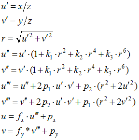
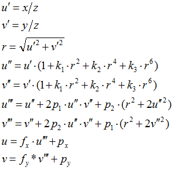

Namespace Hierarchy
C++ |
PXCCalibration::StreamCalibration |
C# |
PXCMCalibration.StreamCalibration |
Java |
PXCMCalibration.StreamCalibration |
Definition
C++ |
struct StreamCalibration { PXCPointF32 focalLength; PXCPointF32 principalPoint; pxcF32 radialDistortion[3]; pxcF32 tangentialDistortion[2]; PXCCapture::DeviceModel model; }; |
C# |
struct StreamCalibration { PXCMPointF32 focalLength; PXCMPointF32 principalPoint; Single[] radialDistortion; Single[] tangentialDistortion; PXCMCapture.DeviceModel model; }; |
Java |
struct StreamCalibration { PXCMPointF32 focalLength; PXCMPointF32 principalPoint; float[] radialDistortion; float[] tangentialDistortion; PXCMCapture.DeviceModel model; }; |
The StreamCalibration structure describes the stream calibration parameters. A 3D point (x,y,z) in the camera coordinate system maps to a depth image pixel (u,v) by the following formula: For camera model F200:  For camera model R200: 
|
Members
|
focalLength |
The sensor focal length (fx,fy) in pixels along the X and Y axes. The values vary with the stream resolution setting. |
|
principalPoint |
The sensor principal point (px,py) in pixels along the X and Y axes. The values vary with the stream resolution setting. |
|
radialDistortion |
The radial distortion coefficients, (k1,k2,k3), as described by the camera model equations in the Description section. |
|
tangentialDistortion |
The tangential distortion coefficients, (p1,p2), as described by the camera model equations in the Description section. |
|
model |
The device model identifier. See the DeviceModel enumerator for definitions. |